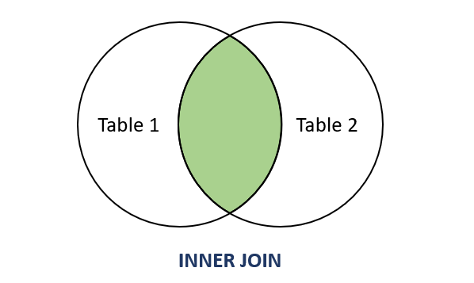
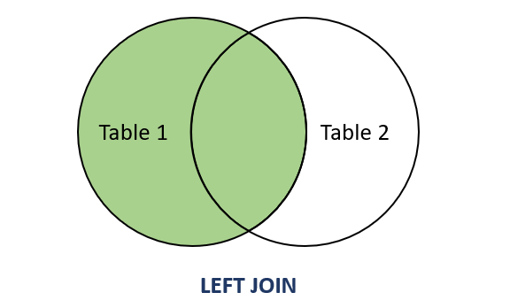
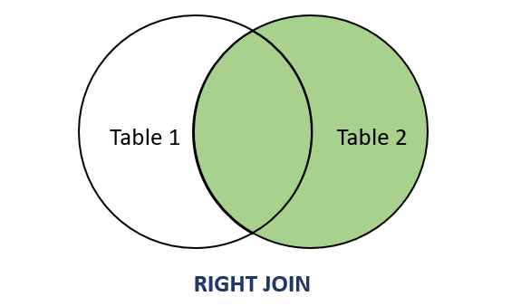

Aprenda a conectar diferentes conjuntos de dados.
Em um banco de dados, os dados não ficam isolados. Eles são organizados em tabelas que se conectam, criando uma rede de informações. A conexão entre essas tabelas é feita através de chaves.
Imagine a tabela `clientes` e a tabela `vendas`. Elas se relacionam porque um cliente pode fazer várias vendas. Para sabermos qual cliente fez qual venda, usamos a **chave primária** (`cliente_id`) na tabela `clientes` e a repetimos como uma **chave estrangeira** na tabela `vendas`.
O comando JOIN é usado para combinar linhas de duas ou mais tabelas com base em uma coluna relacionada entre elas.
Retorna apenas as linhas que têm correspondência nas **duas tabelas**. É o tipo de JOIN mais comum.

SELECT clientes.nome, vendas.data_venda
FROM clientes
INNER JOIN vendas ON clientes.cliente_id = vendas.cliente_id;Retorna todas as linhas da tabela da **esquerda** e as linhas correspondentes da tabela da direita. Se não houver correspondência, o resultado da tabela da direita será NULL.

SELECT clientes.nome, vendas.venda_id
FROM clientes
LEFT JOIN vendas ON clientes.cliente_id = vendas.cliente_id;Retorna todas as linhas da tabela da **direita** e as linhas correspondentes da tabela da esquerda. Se não houver correspondência, o resultado da tabela da esquerda será NULL.

SELECT clientes.nome, vendas.venda_id
FROM clientes
RIGHT JOIN vendas ON clientes.cliente_id = vendas.cliente_id;